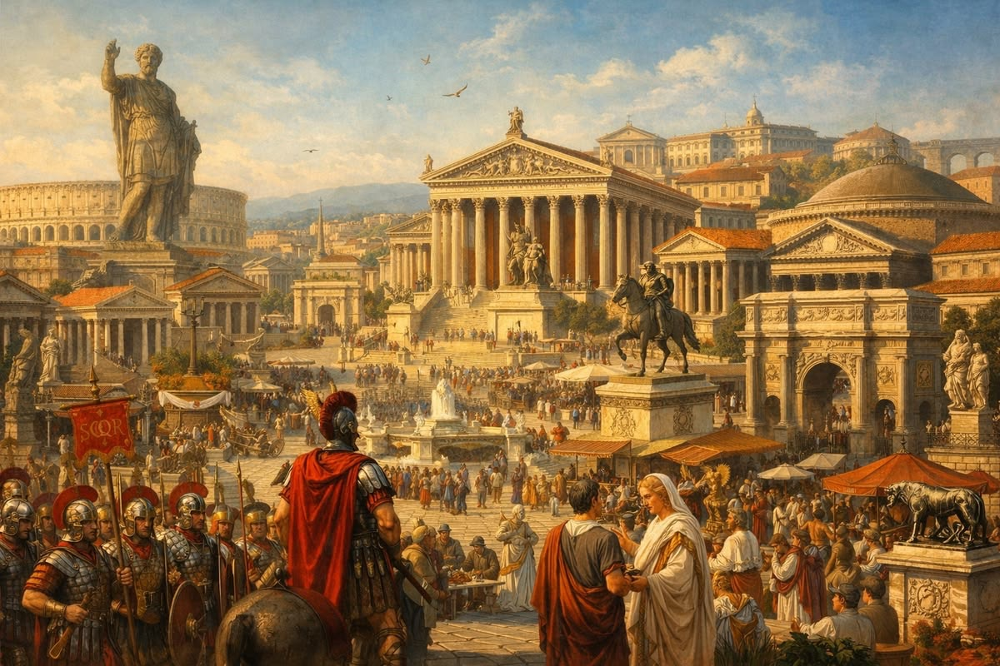

อารยธรรมโรมัน

อารยธรรมโรมันเป็นอารยธรรมที่มีบทบาทสำคัญต่อประวัติศาสตร์ยุโรป กรุงโรมเริ่มต้นจากนครรัฐและพัฒนาจนกลายเป็นจักรวรรดิขนาดใหญ่ ชาวโรมันมีความสามารถด้านกฎหมาย การปกครอง วิศวกรรม และสถาปัตยกรรม มีผลงานสำคัญ เช่น ถนน สะพาน ระบบส่งน้ำ และกฎหมายที่มีอิทธิพลต่อสังคมในยุคต่อมา